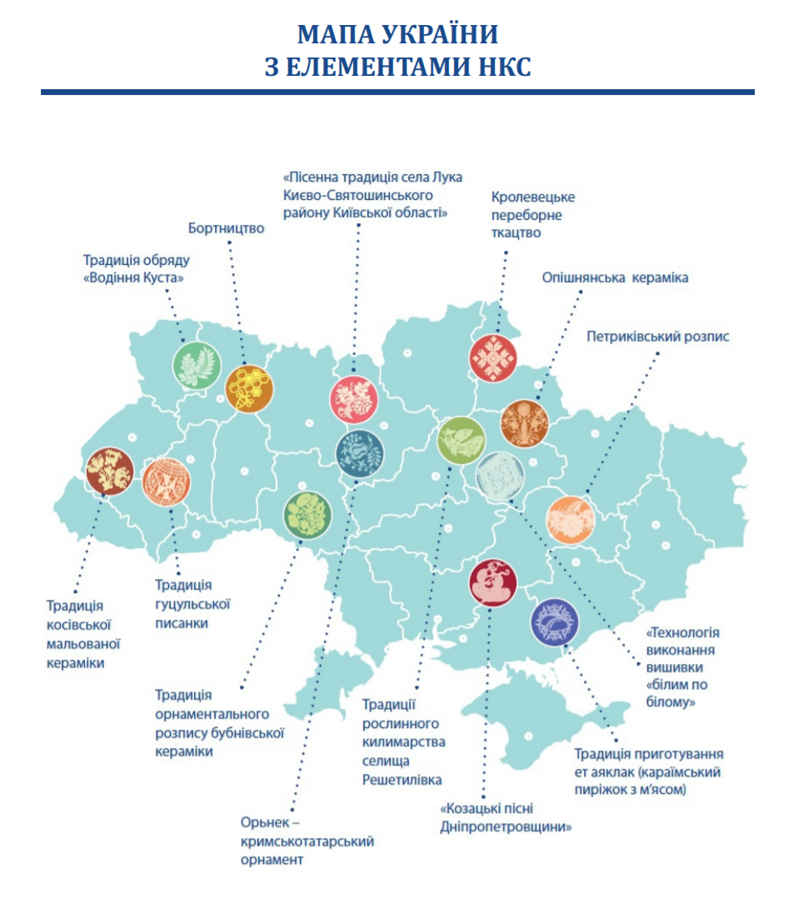

Що таке нематеріальна культурна спадщина України?
Нематеріальна культурна спадщина України — українська національна складова загальної концепції нематеріальної культурної спадщини, запропонованої в 1990-х роках як аналог Світової спадщини ЮНЕСКО, що приділяє основну увагу матеріальній культурі.
Станом на лютий 2021 Національний перелік нематеріальної культурної спадщини України налічує 26 елементів:
- 1. Традиції Косівської мальованої кераміки
- 2. Кролевецьке переборне ткацтво»
- 3. Опішнянська кераміка
- 4. Петриківський розпис — українське декоративно-орнаментальне малярство ХІХ — ХХІ ст.
- 5. Козацькі пісні Дніпропетровщини»
- 6. Пісенна традиція села Лука[2] Києво-Святошинського району Київської області
- 7. Технологія виконання вишивки «білим по білому» селища Решетилівка, Решетилівського району Полтавської області
- 8. Традиції рослинного килимарства селища Решетилівка Решетилівського району Полтавської області
- 9. Кримськотатарський національний орнамент Орнек - кримськотатарський орнамент та знання про нього
- 10. Традиція орнаментального розпису бубнівської кераміки
- 11. Бортництво
- 12. Традиція гуцульської писанки
- 13. Традиція приготування ет аяклак (караїмський пиріжок з м'ясом). Досвід караїмів Мелітополя
- 14. ПТрадиція обряду «Водіння Куста» у селі Сварицевичі Дубровицького району Рівненської області
- 15. Традиція декоративного розпису села Самчики
- 16. Олешнянське гончарство Чернігівщини
- 17. Художнє дереворізьблення Чернігівщини
- 18. Гуцульська коляда та плєси Верховинського району Івано-Франківської області
- 19. Звичай виконувати танець Аркан з Ковалівкою в Печеніжинській ОТГ
- 20. Мистецтво виготовлення звукової глиняної забавки «Валківський свищик»
- 21. Технологія виготовлення «воскових» вінків на Вінниччині
- 22. Культура приготування українського борщу
- 23. Карпатське ліжникарство
- 24. Борщівська народна вишивка
- 25. Технологія створення клембівської сорочки «з квіткою»
- 26. Великоднє гуляння «Водити Володара» в селі Розкошівка Теплицького району Вінницької області
Крім того триває робота над створенням місцевих переліків елементів нематеріальної культурної спадщини, яких нараховується близько сотні
За зневажливе ставлення та плюндрування елементів нематеріальної культурної спадщини України законом України передбачено адміністративну та кримінальну відповідальність.
